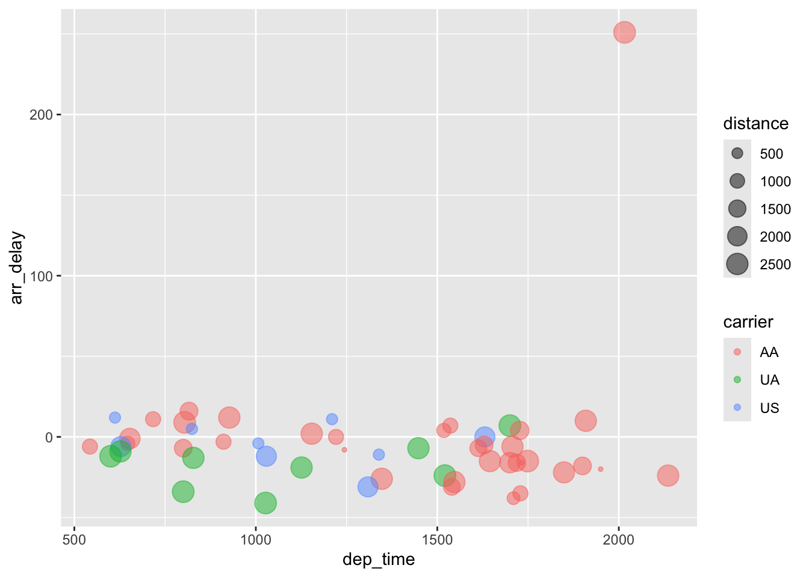
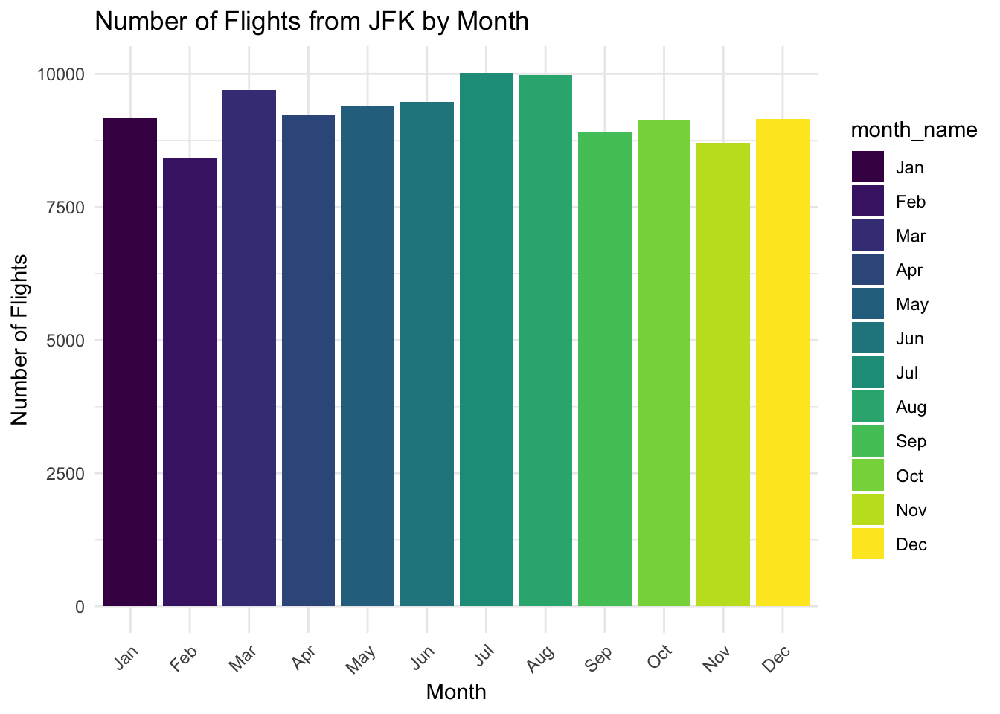
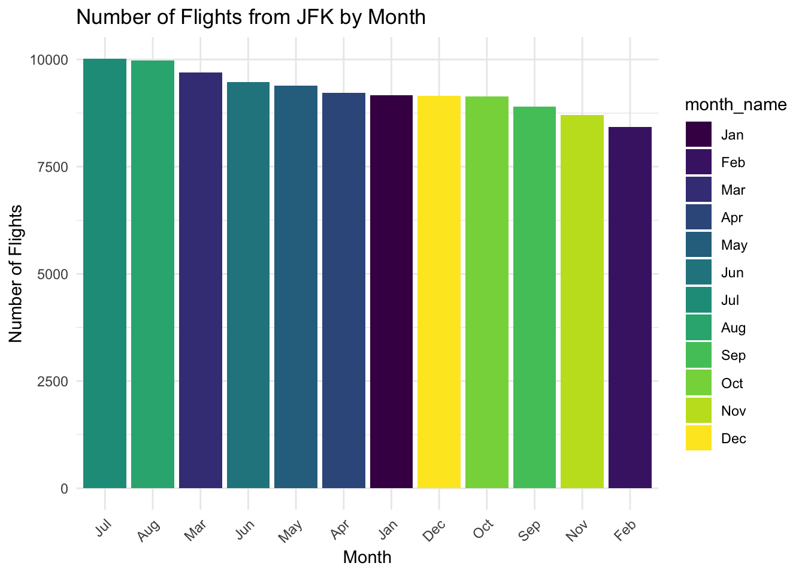
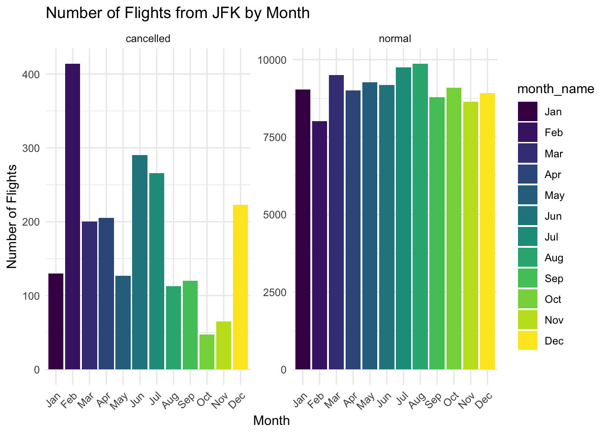
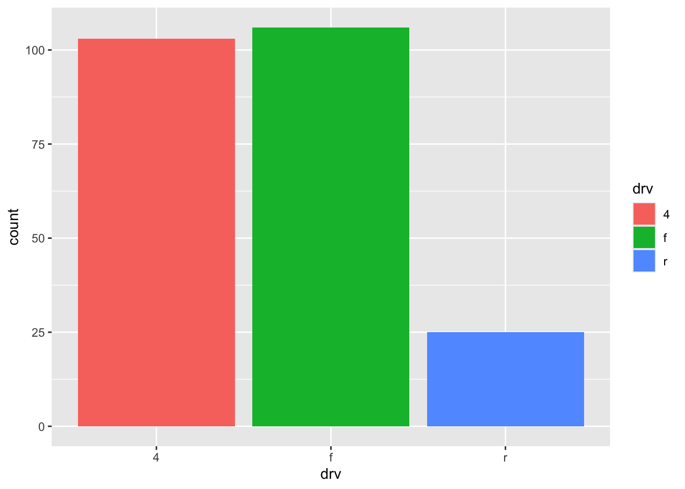
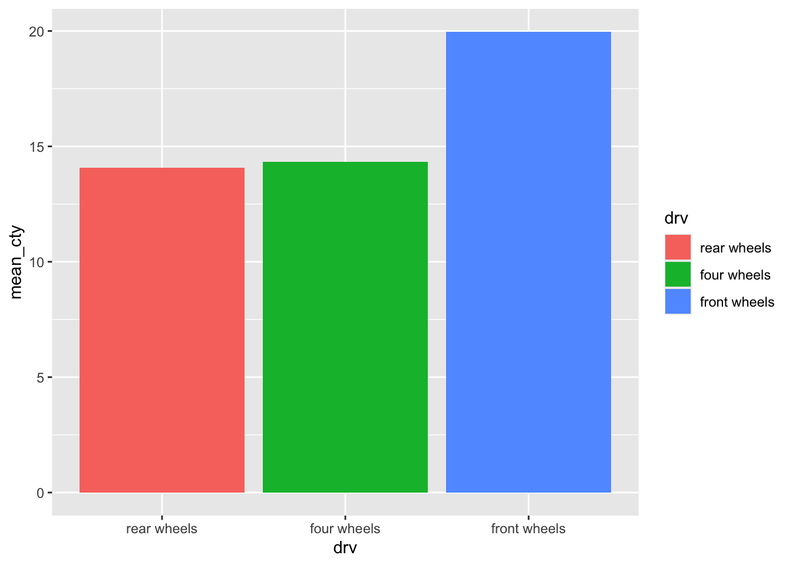
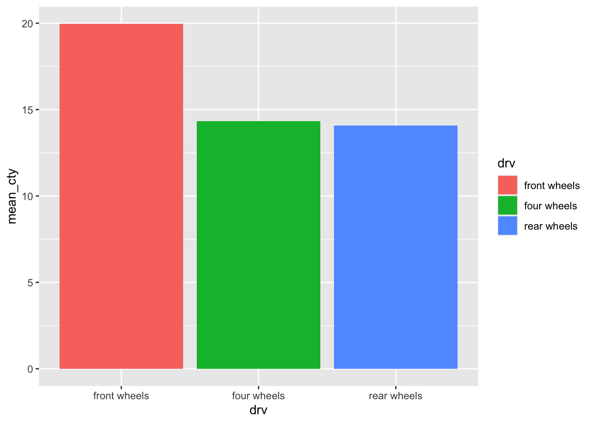

第5讲 tidyverse
“Tidy datasets are all alike, but every messy dataset is messy in its own way.” — Hadley Wickham
Ref: Wickham, H., Çetinkaya-Rundel, M., & Grolemund, G. (2023). R for data science.
需要安装和加载的包
1 什么是tidy data？
对比table1, table2, table3
# A tibble: 6 × 4
country year cases population
<chr> <dbl> <dbl> <dbl>
1 Afghanistan 1999 745 19987071
2 Afghanistan 2000 2666 20595360
3 Brazil 1999 37737 172006362
4 Brazil 2000 80488 174504898
5 China 1999 212258 1272915272
6 China 2000 213766 1280428583# A tibble: 12 × 4
country year type count
<chr> <dbl> <chr> <dbl>
1 Afghanistan 1999 cases 745
2 Afghanistan 1999 population 19987071
3 Afghanistan 2000 cases 2666
4 Afghanistan 2000 population 20595360
5 Brazil 1999 cases 37737
6 Brazil 1999 population 172006362
7 Brazil 2000 cases 80488
8 Brazil 2000 population 174504898
9 China 1999 cases 212258
10 China 1999 population 1272915272
11 China 2000 cases 213766
12 China 2000 population 1280428583# A tibble: 6 × 3
country year rate
<chr> <dbl> <chr>
1 Afghanistan 1999 745/19987071
2 Afghanistan 2000 2666/20595360
3 Brazil 1999 37737/172006362
4 Brazil 2000 80488/174504898
5 China 1999 212258/1272915272
6 China 2000 213766/1280428583tidydata的特征
每个变量是一列；每列是一个变量。
每个观察结果是一行；每行是一个观察结果。
每个值是一个单元格；每个单元格是一个单一值。
 为什么要确保你的数据整洁？
为什么要确保你的数据整洁？
如果你有一个一致的数据结构，学习与之配合的工具就更容易，因为它们具有底层的统一性。
将变量放在列中, 发挥R的向量化特性，大多数内置的R函数都是与向量一起工作的。
2 如何查看数据？
View()/glimpse()/head()/tail()
# A tibble: 336,776 × 19
year month day dep_time sched_dep_time dep_delay arr_time sched_arr_time
<int> <int> <int> <int> <int> <dbl> <int> <int>
1 2013 1 1 517 515 2 830 819
2 2013 1 1 533 529 4 850 830
3 2013 1 1 542 540 2 923 850
4 2013 1 1 544 545 -1 1004 1022
5 2013 1 1 554 600 -6 812 837
6 2013 1 1 554 558 -4 740 728
7 2013 1 1 555 600 -5 913 854
8 2013 1 1 557 600 -3 709 723
9 2013 1 1 557 600 -3 838 846
10 2013 1 1 558 600 -2 753 745
# ℹ 336,766 more rows
# ℹ 11 more variables: arr_delay <dbl>, carrier <chr>, flight <int>,
# tailnum <chr>, origin <chr>, dest <chr>, air_time <dbl>, distance <dbl>,
# hour <dbl>, minute <dbl>, time_hour <dttm>Rows: 336,776
Columns: 19
$ year <int> 2013, 2013, 2013, 2013, 2013, 2013, 2013, 2013, 2013, 2…
$ month <int> 1, 1, 1, 1, 1, 1, 1, 1, 1, 1, 1, 1, 1, 1, 1, 1, 1, 1, 1…
$ day <int> 1, 1, 1, 1, 1, 1, 1, 1, 1, 1, 1, 1, 1, 1, 1, 1, 1, 1, 1…
$ dep_time <int> 517, 533, 542, 544, 554, 554, 555, 557, 557, 558, 558, …
$ sched_dep_time <int> 515, 529, 540, 545, 600, 558, 600, 600, 600, 600, 600, …
$ dep_delay <dbl> 2, 4, 2, -1, -6, -4, -5, -3, -3, -2, -2, -2, -2, -2, -1…
$ arr_time <int> 830, 850, 923, 1004, 812, 740, 913, 709, 838, 753, 849,…
$ sched_arr_time <int> 819, 830, 850, 1022, 837, 728, 854, 723, 846, 745, 851,…
$ arr_delay <dbl> 11, 20, 33, -18, -25, 12, 19, -14, -8, 8, -2, -3, 7, -1…
$ carrier <chr> "UA", "UA", "AA", "B6", "DL", "UA", "B6", "EV", "B6", "…
$ flight <int> 1545, 1714, 1141, 725, 461, 1696, 507, 5708, 79, 301, 4…
$ tailnum <chr> "N14228", "N24211", "N619AA", "N804JB", "N668DN", "N394…
$ origin <chr> "EWR", "LGA", "JFK", "JFK", "LGA", "EWR", "EWR", "LGA",…
$ dest <chr> "IAH", "IAH", "MIA", "BQN", "ATL", "ORD", "FLL", "IAD",…
$ air_time <dbl> 227, 227, 160, 183, 116, 150, 158, 53, 140, 138, 149, 1…
$ distance <dbl> 1400, 1416, 1089, 1576, 762, 719, 1065, 229, 944, 733, …
$ hour <dbl> 5, 5, 5, 5, 6, 5, 6, 6, 6, 6, 6, 6, 6, 6, 6, 5, 6, 6, 6…
$ minute <dbl> 15, 29, 40, 45, 0, 58, 0, 0, 0, 0, 0, 0, 0, 0, 0, 59, 0…
$ time_hour <dttm> 2013-01-01 05:00:00, 2013-01-01 05:00:00, 2013-01-01 0…# A tibble: 6 × 19
year month day dep_time sched_dep_time dep_delay arr_time sched_arr_time
<int> <int> <int> <int> <int> <dbl> <int> <int>
1 2013 1 1 517 515 2 830 819
2 2013 1 1 533 529 4 850 830
3 2013 1 1 542 540 2 923 850
4 2013 1 1 544 545 -1 1004 1022
5 2013 1 1 554 600 -6 812 837
6 2013 1 1 554 558 -4 740 728
# ℹ 11 more variables: arr_delay <dbl>, carrier <chr>, flight <int>,
# tailnum <chr>, origin <chr>, dest <chr>, air_time <dbl>, distance <dbl>,
# hour <dbl>, minute <dbl>, time_hour <dttm># A tibble: 6 × 19
year month day dep_time sched_dep_time dep_delay arr_time sched_arr_time
<int> <int> <int> <int> <int> <dbl> <int> <int>
1 2013 9 30 NA 1842 NA NA 2019
2 2013 9 30 NA 1455 NA NA 1634
3 2013 9 30 NA 2200 NA NA 2312
4 2013 9 30 NA 1210 NA NA 1330
5 2013 9 30 NA 1159 NA NA 1344
6 2013 9 30 NA 840 NA NA 1020
# ℹ 11 more variables: arr_delay <dbl>, carrier <chr>, flight <int>,
# tailnum <chr>, origin <chr>, dest <chr>, air_time <dbl>, distance <dbl>,
# hour <dbl>, minute <dbl>, time_hour <dttm>int 整数 integer
dbl 双精度浮点数 bouble (实数)
chr 字符串
dttm 日期时间
3 dplyr函数
3.1 dplyr函数的共性
第1项参数是data frame.
第2项参数描述动作。
输出结果是一个新的data frame.
3.2 dplyr函数的分类
- 行的管理 Rows:
filter()chooses rows based on column values.arrange()changes the order of the rows.distinct()removes duplicate rows.na.omit()removes rows with missing values.drop.na()removes rows with missing values.slice()chooses rows based on location.
- 列的管理 Columns:
mutate()changes the values of columns and creates new columns.select()changes whether or not a column is included.rename()changes the name of columns.if_else()changes the values of columns based on a condition.case_when()changes the values of columns based on multiple conditions.recode()changes the values of columns based on a condition.relocate()changes the order of the columns.
- 行组的管理Groups of rows:
summarise()collapses a group into a single row.count()top_n()
3.3 Rows
3.3.1 保留filter()
# A tibble: 9,723 × 19
year month day dep_time sched_dep_time dep_delay arr_time sched_arr_time
<int> <int> <int> <int> <int> <dbl> <int> <int>
1 2013 1 1 848 1835 853 1001 1950
2 2013 1 1 957 733 144 1056 853
3 2013 1 1 1114 900 134 1447 1222
4 2013 1 1 1540 1338 122 2020 1825
5 2013 1 1 1815 1325 290 2120 1542
6 2013 1 1 1842 1422 260 1958 1535
7 2013 1 1 1856 1645 131 2212 2005
8 2013 1 1 1934 1725 129 2126 1855
9 2013 1 1 1938 1703 155 2109 1823
10 2013 1 1 1942 1705 157 2124 1830
# ℹ 9,713 more rows
# ℹ 11 more variables: arr_delay <dbl>, carrier <chr>, flight <int>,
# tailnum <chr>, origin <chr>, dest <chr>, air_time <dbl>, distance <dbl>,
# hour <dbl>, minute <dbl>, time_hour <dttm>>=（大于或等于）
<（小于）
<=（小于或等于）
==（等于）
!=（不等于）
& 条件组合，同时成立
| “或”，至少有一个条件成立
# A tibble: 842 × 19
year month day dep_time sched_dep_time dep_delay arr_time sched_arr_time
<int> <int> <int> <int> <int> <dbl> <int> <int>
1 2013 1 1 517 515 2 830 819
2 2013 1 1 533 529 4 850 830
3 2013 1 1 542 540 2 923 850
4 2013 1 1 544 545 -1 1004 1022
5 2013 1 1 554 600 -6 812 837
6 2013 1 1 554 558 -4 740 728
7 2013 1 1 555 600 -5 913 854
8 2013 1 1 557 600 -3 709 723
9 2013 1 1 557 600 -3 838 846
10 2013 1 1 558 600 -2 753 745
# ℹ 832 more rows
# ℹ 11 more variables: arr_delay <dbl>, carrier <chr>, flight <int>,
# tailnum <chr>, origin <chr>, dest <chr>, air_time <dbl>, distance <dbl>,
# hour <dbl>, minute <dbl>, time_hour <dttm># A tibble: 51,955 × 19
year month day dep_time sched_dep_time dep_delay arr_time sched_arr_time
<int> <int> <int> <int> <int> <dbl> <int> <int>
1 2013 1 1 517 515 2 830 819
2 2013 1 1 533 529 4 850 830
3 2013 1 1 542 540 2 923 850
4 2013 1 1 544 545 -1 1004 1022
5 2013 1 1 554 600 -6 812 837
6 2013 1 1 554 558 -4 740 728
7 2013 1 1 555 600 -5 913 854
8 2013 1 1 557 600 -3 709 723
9 2013 1 1 557 600 -3 838 846
10 2013 1 1 558 600 -2 753 745
# ℹ 51,945 more rows
# ℹ 11 more variables: arr_delay <dbl>, carrier <chr>, flight <int>,
# tailnum <chr>, origin <chr>, dest <chr>, air_time <dbl>, distance <dbl>,
# hour <dbl>, minute <dbl>, time_hour <dttm># A tibble: 51,955 × 19
year month day dep_time sched_dep_time dep_delay arr_time sched_arr_time
<int> <int> <int> <int> <int> <dbl> <int> <int>
1 2013 1 1 517 515 2 830 819
2 2013 1 1 533 529 4 850 830
3 2013 1 1 542 540 2 923 850
4 2013 1 1 544 545 -1 1004 1022
5 2013 1 1 554 600 -6 812 837
6 2013 1 1 554 558 -4 740 728
7 2013 1 1 555 600 -5 913 854
8 2013 1 1 557 600 -3 709 723
9 2013 1 1 557 600 -3 838 846
10 2013 1 1 558 600 -2 753 745
# ℹ 51,945 more rows
# ℹ 11 more variables: arr_delay <dbl>, carrier <chr>, flight <int>,
# tailnum <chr>, origin <chr>, dest <chr>, air_time <dbl>, distance <dbl>,
# hour <dbl>, minute <dbl>, time_hour <dttm>注意：当你运行 filter() 时，dplyr 执行过滤操作，创建一个新的数据框，然后打印它。它不会修改现有的 flights 数据集，因为 dplyr 函数永远不会修改它们的输入。要保存结果，你需要使用赋值操作符，<-
常见错误
3.3.2 排序arange()
# A tibble: 336,776 × 19
year month day dep_time sched_dep_time dep_delay arr_time sched_arr_time
<int> <int> <int> <int> <int> <dbl> <int> <int>
1 2013 1 1 517 515 2 830 819
2 2013 1 1 533 529 4 850 830
3 2013 1 1 542 540 2 923 850
4 2013 1 1 544 545 -1 1004 1022
5 2013 1 1 554 600 -6 812 837
6 2013 1 1 554 558 -4 740 728
7 2013 1 1 555 600 -5 913 854
8 2013 1 1 557 600 -3 709 723
9 2013 1 1 557 600 -3 838 846
10 2013 1 1 558 600 -2 753 745
# ℹ 336,766 more rows
# ℹ 11 more variables: arr_delay <dbl>, carrier <chr>, flight <int>,
# tailnum <chr>, origin <chr>, dest <chr>, air_time <dbl>, distance <dbl>,
# hour <dbl>, minute <dbl>, time_hour <dttm># A tibble: 336,776 × 19
year month day dep_time sched_dep_time dep_delay arr_time sched_arr_time
<int> <int> <int> <int> <int> <dbl> <int> <int>
1 2013 1 9 641 900 1301 1242 1530
2 2013 6 15 1432 1935 1137 1607 2120
3 2013 1 10 1121 1635 1126 1239 1810
4 2013 9 20 1139 1845 1014 1457 2210
5 2013 7 22 845 1600 1005 1044 1815
6 2013 4 10 1100 1900 960 1342 2211
7 2013 3 17 2321 810 911 135 1020
8 2013 6 27 959 1900 899 1236 2226
9 2013 7 22 2257 759 898 121 1026
10 2013 12 5 756 1700 896 1058 2020
# ℹ 336,766 more rows
# ℹ 11 more variables: arr_delay <dbl>, carrier <chr>, flight <int>,
# tailnum <chr>, origin <chr>, dest <chr>, air_time <dbl>, distance <dbl>,
# hour <dbl>, minute <dbl>, time_hour <dttm>3.3.3 删除有缺失值的行na.omit()/drop_na()
# A tibble: 327,346 × 19
year month day dep_time sched_dep_time dep_delay arr_time sched_arr_time
<int> <int> <int> <int> <int> <dbl> <int> <int>
1 2013 1 1 517 515 2 830 819
2 2013 1 1 533 529 4 850 830
3 2013 1 1 542 540 2 923 850
4 2013 1 1 544 545 -1 1004 1022
5 2013 1 1 554 600 -6 812 837
6 2013 1 1 554 558 -4 740 728
7 2013 1 1 555 600 -5 913 854
8 2013 1 1 557 600 -3 709 723
9 2013 1 1 557 600 -3 838 846
10 2013 1 1 558 600 -2 753 745
# ℹ 327,336 more rows
# ℹ 11 more variables: arr_delay <dbl>, carrier <chr>, flight <int>,
# tailnum <chr>, origin <chr>, dest <chr>, air_time <dbl>, distance <dbl>,
# hour <dbl>, minute <dbl>, time_hour <dttm># A tibble: 328,063 × 19
year month day dep_time sched_dep_time dep_delay arr_time sched_arr_time
<int> <int> <int> <int> <int> <dbl> <int> <int>
1 2013 1 1 517 515 2 830 819
2 2013 1 1 533 529 4 850 830
3 2013 1 1 542 540 2 923 850
4 2013 1 1 544 545 -1 1004 1022
5 2013 1 1 554 600 -6 812 837
6 2013 1 1 554 558 -4 740 728
7 2013 1 1 555 600 -5 913 854
8 2013 1 1 557 600 -3 709 723
9 2013 1 1 557 600 -3 838 846
10 2013 1 1 558 600 -2 753 745
# ℹ 328,053 more rows
# ℹ 11 more variables: arr_delay <dbl>, carrier <chr>, flight <int>,
# tailnum <chr>, origin <chr>, dest <chr>, air_time <dbl>, distance <dbl>,
# hour <dbl>, minute <dbl>, time_hour <dttm>3.3.4 去重distinct()
# A tibble: 336,776 × 19
year month day dep_time sched_dep_time dep_delay arr_time sched_arr_time
<int> <int> <int> <int> <int> <dbl> <int> <int>
1 2013 1 1 517 515 2 830 819
2 2013 1 1 533 529 4 850 830
3 2013 1 1 542 540 2 923 850
4 2013 1 1 544 545 -1 1004 1022
5 2013 1 1 554 600 -6 812 837
6 2013 1 1 554 558 -4 740 728
7 2013 1 1 555 600 -5 913 854
8 2013 1 1 557 600 -3 709 723
9 2013 1 1 557 600 -3 838 846
10 2013 1 1 558 600 -2 753 745
# ℹ 336,766 more rows
# ℹ 11 more variables: arr_delay <dbl>, carrier <chr>, flight <int>,
# tailnum <chr>, origin <chr>, dest <chr>, air_time <dbl>, distance <dbl>,
# hour <dbl>, minute <dbl>, time_hour <dttm># A tibble: 365 × 3
year month day
<int> <int> <int>
1 2013 1 1
2 2013 1 2
3 2013 1 3
4 2013 1 4
5 2013 1 5
6 2013 1 6
7 2013 1 7
8 2013 1 8
9 2013 1 9
10 2013 1 10
# ℹ 355 more rows# A tibble: 224 × 2
origin dest
<chr> <chr>
1 EWR IAH
2 LGA IAH
3 JFK MIA
4 JFK BQN
5 LGA ATL
6 EWR ORD
7 EWR FLL
8 LGA IAD
9 JFK MCO
10 LGA ORD
# ℹ 214 more rowsflights %>%
distinct(origin, dest, #找到year, month, day 的唯一组合
.keep_all = TRUE) #保留所有的列。 .keep_all默认为FALSE，不保留其余的列# A tibble: 224 × 19
year month day dep_time sched_dep_time dep_delay arr_time sched_arr_time
<int> <int> <int> <int> <int> <dbl> <int> <int>
1 2013 1 1 517 515 2 830 819
2 2013 1 1 533 529 4 850 830
3 2013 1 1 542 540 2 923 850
4 2013 1 1 544 545 -1 1004 1022
5 2013 1 1 554 600 -6 812 837
6 2013 1 1 554 558 -4 740 728
7 2013 1 1 555 600 -5 913 854
8 2013 1 1 557 600 -3 709 723
9 2013 1 1 557 600 -3 838 846
10 2013 1 1 558 600 -2 753 745
# ℹ 214 more rows
# ℹ 11 more variables: arr_delay <dbl>, carrier <chr>, flight <int>,
# tailnum <chr>, origin <chr>, dest <chr>, air_time <dbl>, distance <dbl>,
# hour <dbl>, minute <dbl>, time_hour <dttm>3.3.5 缺失值is.na()
# A tibble: 8,255 × 19
year month day dep_time sched_dep_time dep_delay arr_time sched_arr_time
<int> <int> <int> <int> <int> <dbl> <int> <int>
1 2013 1 1 NA 1630 NA NA 1815
2 2013 1 1 NA 1935 NA NA 2240
3 2013 1 1 NA 1500 NA NA 1825
4 2013 1 1 NA 600 NA NA 901
5 2013 1 2 NA 1540 NA NA 1747
6 2013 1 2 NA 1620 NA NA 1746
7 2013 1 2 NA 1355 NA NA 1459
8 2013 1 2 NA 1420 NA NA 1644
9 2013 1 2 NA 1321 NA NA 1536
10 2013 1 2 NA 1545 NA NA 1910
# ℹ 8,245 more rows
# ℹ 11 more variables: arr_delay <dbl>, carrier <chr>, flight <int>,
# tailnum <chr>, origin <chr>, dest <chr>, air_time <dbl>, distance <dbl>,
# hour <dbl>, minute <dbl>, time_hour <dttm># A tibble: 328,521 × 19
year month day dep_time sched_dep_time dep_delay arr_time sched_arr_time
<int> <int> <int> <int> <int> <dbl> <int> <int>
1 2013 1 1 517 515 2 830 819
2 2013 1 1 533 529 4 850 830
3 2013 1 1 542 540 2 923 850
4 2013 1 1 544 545 -1 1004 1022
5 2013 1 1 554 600 -6 812 837
6 2013 1 1 554 558 -4 740 728
7 2013 1 1 555 600 -5 913 854
8 2013 1 1 557 600 -3 709 723
9 2013 1 1 557 600 -3 838 846
10 2013 1 1 558 600 -2 753 745
# ℹ 328,511 more rows
# ℹ 11 more variables: arr_delay <dbl>, carrier <chr>, flight <int>,
# tailnum <chr>, origin <chr>, dest <chr>, air_time <dbl>, distance <dbl>,
# hour <dbl>, minute <dbl>, time_hour <dttm>3.3.6 小练习
第1题: 将满足下列条件的航班筛选出来，保存为一个新的数据框christmas_jfk, 该数据框中一共有多少个航班？
航班出发日期为2013年12月24日.
出发地(origin)机场是”JFK”.
John F. Kennedy International Airport, JFK
LaGuardia Airport, LGA
Newark Liberty International Airport, EWR
- 航空公司(carrier)是”AA”,或者”UA”, 或者”US”.
AA, American Airlines.
UA, United Airlines
US, US Airways
- 将到达延误时长(arr_delay)中有缺失值的行剔除
第2题: 对数据框christmas_jfk, 按照到达延误时长(arr_delay)降序排列航班
第3题: 绘制数据框christmas_jfk中出发时间(dep_time)和到达延误时长(arr_delay)的散点图，散点的颜色用航空公司(carrier)来映射, 散点的大小用飞行距离来映射。
code
christmas_jfk <- flights %>%
filter(year == 2013 & month == 12 & day == 24 & origin == "JFK" ) %>%
filter(carrier %in% c("AA", "UA", "US")) %>%
drop_na(arr_delay) %>%
arrange(desc(arr_delay))
christmas_jfk %>% print(width = Inf)# A tibble: 52 × 19
year month day dep_time sched_dep_time dep_delay arr_time sched_arr_time
<int> <int> <int> <int> <int> <dbl> <int> <int>
1 2013 12 24 2016 1530 286 2326 1915
2 2013 12 24 816 750 26 1311 1255
3 2013 12 24 612 615 -3 829 817
4 2013 12 24 927 900 27 1237 1225
5 2013 12 24 717 720 -3 1056 1045
6 2013 12 24 1210 1200 10 1411 1400
7 2013 12 24 1909 1900 9 2225 2215
8 2013 12 24 804 800 4 1144 1135
9 2013 12 24 1536 1510 26 1852 1845
10 2013 12 24 1700 1700 0 2046 2039
arr_delay carrier flight tailnum origin dest air_time distance hour minute
<dbl> <chr> <int> <chr> <chr> <chr> <dbl> <dbl> <dbl> <dbl>
1 251 AA 85 N374AA JFK SFO 341 2586 15 30
2 16 AA 936 N5EUAA JFK STT 206 1623 7 50
3 12 US 840 N558UW JFK CLT 112 541 6 15
4 12 AA 1 N336AA JFK LAX 343 2475 9 0
5 11 AA 1345 N319AA JFK MIA 168 1089 7 20
6 11 US 1817 N540UW JFK CLT 88 541 12 0
7 10 AA 21 N339AA JFK LAX 343 2475 19 0
8 9 AA 59 N377AA JFK SFO 364 2586 8 0
9 7 AA 145 N5FHAA JFK MIA 173 1089 15 10
10 7 UA 512 N597UA JFK SFO 363 2586 17 0
time_hour
<dttm>
1 2013-12-24 15:00:00
2 2013-12-24 07:00:00
3 2013-12-24 06:00:00
4 2013-12-24 09:00:00
5 2013-12-24 07:00:00
6 2013-12-24 12:00:00
7 2013-12-24 19:00:00
8 2013-12-24 08:00:00
9 2013-12-24 15:00:00
10 2013-12-24 17:00:00
# ℹ 42 more rows[1] 52christmas_jfk %>%
ggplot(aes(dep_time, arr_delay, col = carrier, size = distance)) +
geom_point(alpha = 0.5)
flights %>%
filter(year == 2013, month == 12, day == 24,
origin == "JFK", carrier %in% c("AA", "UA", "US")) %>%
drop_na(arr_delay) %>%
arrange(desc(arr_delay)) %>%
ggplot(aes(dep_time, arr_delay, col = carrier, size = distance)) +
geom_point(alpha = 0.5)3.4 Columns
3.4.1 追加变量mutate()
flights %>%
mutate(
gain = arr_delay - dep_delay,
#gain = 到达延时 -出发延时。gain为正值,表示航班在飞行过程中增加了延迟，航班延迟增加。gain的负值，表示航班在飞行过程中减少了延迟，航班延迟减少，或者航班提前到达。
speed = distance / air_time * 60, #计算飞行速度,
.after = arr_delay #将gain和speed放在arr_delay列后，默认是放在最后两列
)# A tibble: 336,776 × 21
year month day dep_time sched_dep_time dep_delay arr_time sched_arr_time
<int> <int> <int> <int> <int> <dbl> <int> <int>
1 2013 1 1 517 515 2 830 819
2 2013 1 1 533 529 4 850 830
3 2013 1 1 542 540 2 923 850
4 2013 1 1 544 545 -1 1004 1022
5 2013 1 1 554 600 -6 812 837
6 2013 1 1 554 558 -4 740 728
7 2013 1 1 555 600 -5 913 854
8 2013 1 1 557 600 -3 709 723
9 2013 1 1 557 600 -3 838 846
10 2013 1 1 558 600 -2 753 745
# ℹ 336,766 more rows
# ℹ 13 more variables: arr_delay <dbl>, gain <dbl>, speed <dbl>, carrier <chr>,
# flight <int>, tailnum <chr>, origin <chr>, dest <chr>, air_time <dbl>,
# distance <dbl>, hour <dbl>, minute <dbl>, time_hour <dttm>flights %>%
mutate(
gain = arr_delay - dep_delay,
speed = distance / air_time * 60,
.before = 1) #将gain和speed放在第1列,第2列# A tibble: 336,776 × 21
gain speed year month day dep_time sched_dep_time dep_delay arr_time
<dbl> <dbl> <int> <int> <int> <int> <int> <dbl> <int>
1 9 370. 2013 1 1 517 515 2 830
2 16 374. 2013 1 1 533 529 4 850
3 31 408. 2013 1 1 542 540 2 923
4 -17 517. 2013 1 1 544 545 -1 1004
5 -19 394. 2013 1 1 554 600 -6 812
6 16 288. 2013 1 1 554 558 -4 740
7 24 404. 2013 1 1 555 600 -5 913
8 -11 259. 2013 1 1 557 600 -3 709
9 -5 405. 2013 1 1 557 600 -3 838
10 10 319. 2013 1 1 558 600 -2 753
# ℹ 336,766 more rows
# ℹ 12 more variables: sched_arr_time <int>, arr_delay <dbl>, carrier <chr>,
# flight <int>, tailnum <chr>, origin <chr>, dest <chr>, air_time <dbl>,
# distance <dbl>, hour <dbl>, minute <dbl>, time_hour <dttm>flights %>%
mutate(
gain = arr_delay - dep_delay,
speed = distance / air_time * 60,
.after = day) #将gain和speed放在day列后# A tibble: 336,776 × 21
year month day gain speed dep_time sched_dep_time dep_delay arr_time
<int> <int> <int> <dbl> <dbl> <int> <int> <dbl> <int>
1 2013 1 1 9 370. 517 515 2 830
2 2013 1 1 16 374. 533 529 4 850
3 2013 1 1 31 408. 542 540 2 923
4 2013 1 1 -17 517. 544 545 -1 1004
5 2013 1 1 -19 394. 554 600 -6 812
6 2013 1 1 16 288. 554 558 -4 740
7 2013 1 1 24 404. 555 600 -5 913
8 2013 1 1 -11 259. 557 600 -3 709
9 2013 1 1 -5 405. 557 600 -3 838
10 2013 1 1 10 319. 558 600 -2 753
# ℹ 336,766 more rows
# ℹ 12 more variables: sched_arr_time <int>, arr_delay <dbl>, carrier <chr>,
# flight <int>, tailnum <chr>, origin <chr>, dest <chr>, air_time <dbl>,
# distance <dbl>, hour <dbl>, minute <dbl>, time_hour <dttm>注意：
当运行mutate() 时，追加变量，console中显示了追加的结果，但不会修改现有的数据框。
要保存这个新的数据框，需要将其赋值<-。
3.4.2 选择变量select()
# A tibble: 336,776 × 3
year month day
<int> <int> <int>
1 2013 1 1
2 2013 1 1
3 2013 1 1
4 2013 1 1
5 2013 1 1
6 2013 1 1
7 2013 1 1
8 2013 1 1
9 2013 1 1
10 2013 1 1
# ℹ 336,766 more rows# A tibble: 336,776 × 3
year month day
<int> <int> <int>
1 2013 1 1
2 2013 1 1
3 2013 1 1
4 2013 1 1
5 2013 1 1
6 2013 1 1
7 2013 1 1
8 2013 1 1
9 2013 1 1
10 2013 1 1
# ℹ 336,766 more rows# A tibble: 336,776 × 5
year month day dep_delay arr_delay
<int> <int> <int> <dbl> <dbl>
1 2013 1 1 2 11
2 2013 1 1 4 20
3 2013 1 1 2 33
4 2013 1 1 -1 -18
5 2013 1 1 -6 -25
6 2013 1 1 -4 12
7 2013 1 1 -5 19
8 2013 1 1 -3 -14
9 2013 1 1 -3 -8
10 2013 1 1 -2 8
# ℹ 336,766 more rows# A tibble: 336,776 × 16
dep_time sched_dep_time dep_delay arr_time sched_arr_time arr_delay carrier
<int> <int> <dbl> <int> <int> <dbl> <chr>
1 517 515 2 830 819 11 UA
2 533 529 4 850 830 20 UA
3 542 540 2 923 850 33 AA
4 544 545 -1 1004 1022 -18 B6
5 554 600 -6 812 837 -25 DL
6 554 558 -4 740 728 12 UA
7 555 600 -5 913 854 19 B6
8 557 600 -3 709 723 -14 EV
9 557 600 -3 838 846 -8 B6
10 558 600 -2 753 745 8 AA
# ℹ 336,766 more rows
# ℹ 9 more variables: flight <int>, tailnum <chr>, origin <chr>, dest <chr>,
# air_time <dbl>, distance <dbl>, hour <dbl>, minute <dbl>, time_hour <dttm># A tibble: 336,776 × 4
carrier tailnum origin dest
<chr> <chr> <chr> <chr>
1 UA N14228 EWR IAH
2 UA N24211 LGA IAH
3 AA N619AA JFK MIA
4 B6 N804JB JFK BQN
5 DL N668DN LGA ATL
6 UA N39463 EWR ORD
7 B6 N516JB EWR FLL
8 EV N829AS LGA IAD
9 B6 N593JB JFK MCO
10 AA N3ALAA LGA ORD
# ℹ 336,766 more rowsThere are a number of helper functions you can use within select():
starts_with(“abc”): matches names that begin with “abc”.
ends_with(“xyz”): matches names that end with “xyz”.
contains(“ijk”): matches names that contain “ijk”.
num_range(“x”, 1:3): matches x1, x2 and x3.
3.4.3 重命名变量rename()
# A tibble: 336,776 × 19
year month day dep_time sched_dep_time dep_delay arr_time sched_arr_time
<int> <int> <int> <int> <int> <dbl> <int> <int>
1 2013 1 1 517 515 2 830 819
2 2013 1 1 533 529 4 850 830
3 2013 1 1 542 540 2 923 850
4 2013 1 1 544 545 -1 1004 1022
5 2013 1 1 554 600 -6 812 837
6 2013 1 1 554 558 -4 740 728
7 2013 1 1 555 600 -5 913 854
8 2013 1 1 557 600 -3 709 723
9 2013 1 1 557 600 -3 838 846
10 2013 1 1 558 600 -2 753 745
# ℹ 336,766 more rows
# ℹ 11 more variables: arr_delay <dbl>, carrier <chr>, flight <int>,
# tail_num <chr>, origin <chr>, dest <chr>, air_time <dbl>, distance <dbl>,
# hour <dbl>, minute <dbl>, time_hour <dttm>3.4.4 二值转换if_else()
flights %>%
mutate(season = if_else(month %in% c(6, 7, 8), "summer", "non-summer")) %>%
relocate(season, .before = month) #将season列放在month列前# A tibble: 336,776 × 20
year season month day dep_time sched_dep_time dep_delay arr_time
<int> <chr> <int> <int> <int> <int> <dbl> <int>
1 2013 non-summer 1 1 517 515 2 830
2 2013 non-summer 1 1 533 529 4 850
3 2013 non-summer 1 1 542 540 2 923
4 2013 non-summer 1 1 544 545 -1 1004
5 2013 non-summer 1 1 554 600 -6 812
6 2013 non-summer 1 1 554 558 -4 740
7 2013 non-summer 1 1 555 600 -5 913
8 2013 non-summer 1 1 557 600 -3 709
9 2013 non-summer 1 1 557 600 -3 838
10 2013 non-summer 1 1 558 600 -2 753
# ℹ 336,766 more rows
# ℹ 12 more variables: sched_arr_time <int>, arr_delay <dbl>, carrier <chr>,
# flight <int>, tailnum <chr>, origin <chr>, dest <chr>, air_time <dbl>,
# distance <dbl>, hour <dbl>, minute <dbl>, time_hour <dttm>3.4.5 多值转换case_when()
flights %>%
mutate(
status = case_when(
is.na(arr_delay) ~ "cancelled", #如果arr_delay为NA,则status为cancelled
arr_delay < -30 ~ "very early", #如果航班提前超过30分钟到达，status为"very early"
arr_delay < -15 ~ "early", #如果航班提前15到30分钟到达，status为"early"
abs(arr_delay) <= 15 ~ "on time", #如果航班提前或延迟在15分钟以内，status为"on time"
arr_delay < 60 ~ "late", #如果航班延迟小于60分钟，status为"late"
arr_delay < Inf ~ "very late", #如果航班延迟大于等于60分钟，status为"late"
),
.after = arr_delay) #将status列放在arr_delay列后# A tibble: 336,776 × 20
year month day dep_time sched_dep_time dep_delay arr_time sched_arr_time
<int> <int> <int> <int> <int> <dbl> <int> <int>
1 2013 1 1 517 515 2 830 819
2 2013 1 1 533 529 4 850 830
3 2013 1 1 542 540 2 923 850
4 2013 1 1 544 545 -1 1004 1022
5 2013 1 1 554 600 -6 812 837
6 2013 1 1 554 558 -4 740 728
7 2013 1 1 555 600 -5 913 854
8 2013 1 1 557 600 -3 709 723
9 2013 1 1 557 600 -3 838 846
10 2013 1 1 558 600 -2 753 745
# ℹ 336,766 more rows
# ℹ 12 more variables: arr_delay <dbl>, status <chr>, carrier <chr>,
# flight <int>, tailnum <chr>, origin <chr>, dest <chr>, air_time <dbl>,
# distance <dbl>, hour <dbl>, minute <dbl>, time_hour <dttm>3.4.6 重新编码recode()
# recode()函数 旧值 = 新值
# case_when 适合于复杂条件的转换
flights %>%
mutate(quarter = recode(month,
"1" = "Winter", "2" = "Winter", "12" = "Winter",
"3" = "Spring", "4" = "Spring", "5" = "Spring",
"6" = "Summer", "7" = "Summer", "8" = "Summer",
"9" = "Fall", "10" = "Fall", "11" = "Fall"),
.before = month)# A tibble: 336,776 × 20
year quarter month day dep_time sched_dep_time dep_delay arr_time
<int> <chr> <int> <int> <int> <int> <dbl> <int>
1 2013 Winter 1 1 517 515 2 830
2 2013 Winter 1 1 533 529 4 850
3 2013 Winter 1 1 542 540 2 923
4 2013 Winter 1 1 544 545 -1 1004
5 2013 Winter 1 1 554 600 -6 812
6 2013 Winter 1 1 554 558 -4 740
7 2013 Winter 1 1 555 600 -5 913
8 2013 Winter 1 1 557 600 -3 709
9 2013 Winter 1 1 557 600 -3 838
10 2013 Winter 1 1 558 600 -2 753
# ℹ 336,766 more rows
# ℹ 12 more variables: sched_arr_time <int>, arr_delay <dbl>, carrier <chr>,
# flight <int>, tailnum <chr>, origin <chr>, dest <chr>, air_time <dbl>,
# distance <dbl>, hour <dbl>, minute <dbl>, time_hour <dttm># 用case_when()更简洁
flights %>%
mutate(quarter = case_when(
month %in% c(12, 1, 2) ~ "Winter",
month %in% c(3, 4, 5) ~ "Spring",
month %in% c(6, 7, 8) ~ "Summer",
month %in% c(9, 10, 11) ~ "Fall"
),
.before = month)# A tibble: 336,776 × 20
year quarter month day dep_time sched_dep_time dep_delay arr_time
<int> <chr> <int> <int> <int> <int> <dbl> <int>
1 2013 Winter 1 1 517 515 2 830
2 2013 Winter 1 1 533 529 4 850
3 2013 Winter 1 1 542 540 2 923
4 2013 Winter 1 1 544 545 -1 1004
5 2013 Winter 1 1 554 600 -6 812
6 2013 Winter 1 1 554 558 -4 740
7 2013 Winter 1 1 555 600 -5 913
8 2013 Winter 1 1 557 600 -3 709
9 2013 Winter 1 1 557 600 -3 838
10 2013 Winter 1 1 558 600 -2 753
# ℹ 336,766 more rows
# ℹ 12 more variables: sched_arr_time <int>, arr_delay <dbl>, carrier <chr>,
# flight <int>, tailnum <chr>, origin <chr>, dest <chr>, air_time <dbl>,
# distance <dbl>, hour <dbl>, minute <dbl>, time_hour <dttm>flights %>%
mutate(company = recode(carrier,
"9E" = "Endeavor Air",
"AA" = "American Airlines",
"AS" = "Alaska Airlines",
"B6" = "JetBlue Airways",
"DL" = "Delta Air Lines",
"EV" = "ExpressJet Airlines",
"F9" = "Frontier Airlines",
"FL" = "AirTran Airways",
"HA" = "Hawaiian Airlines",
"MQ" = "Envoy Air",
"OO" = "SkyWest Airlines",
"UA" = "United Airlines",
"US" = "US Airways",
"VX" = "Virgin America",
"WN" = "Southwest Airlines",
"YV" = "Mesa Airlines"),
.after = carrier)# A tibble: 336,776 × 20
year month day dep_time sched_dep_time dep_delay arr_time sched_arr_time
<int> <int> <int> <int> <int> <dbl> <int> <int>
1 2013 1 1 517 515 2 830 819
2 2013 1 1 533 529 4 850 830
3 2013 1 1 542 540 2 923 850
4 2013 1 1 544 545 -1 1004 1022
5 2013 1 1 554 600 -6 812 837
6 2013 1 1 554 558 -4 740 728
7 2013 1 1 555 600 -5 913 854
8 2013 1 1 557 600 -3 709 723
9 2013 1 1 557 600 -3 838 846
10 2013 1 1 558 600 -2 753 745
# ℹ 336,766 more rows
# ℹ 12 more variables: arr_delay <dbl>, carrier <chr>, company <chr>,
# flight <int>, tailnum <chr>, origin <chr>, dest <chr>, air_time <dbl>,
# distance <dbl>, hour <dbl>, minute <dbl>, time_hour <dttm>3.4.7 前置变量relocate()
# A tibble: 336,776 × 19
time_hour air_time year month day dep_time sched_dep_time
<dttm> <dbl> <int> <int> <int> <int> <int>
1 2013-01-01 05:00:00 227 2013 1 1 517 515
2 2013-01-01 05:00:00 227 2013 1 1 533 529
3 2013-01-01 05:00:00 160 2013 1 1 542 540
4 2013-01-01 05:00:00 183 2013 1 1 544 545
5 2013-01-01 06:00:00 116 2013 1 1 554 600
6 2013-01-01 05:00:00 150 2013 1 1 554 558
7 2013-01-01 06:00:00 158 2013 1 1 555 600
8 2013-01-01 06:00:00 53 2013 1 1 557 600
9 2013-01-01 06:00:00 140 2013 1 1 557 600
10 2013-01-01 06:00:00 138 2013 1 1 558 600
# ℹ 336,766 more rows
# ℹ 12 more variables: dep_delay <dbl>, arr_time <int>, sched_arr_time <int>,
# arr_delay <dbl>, carrier <chr>, flight <int>, tailnum <chr>, origin <chr>,
# dest <chr>, distance <dbl>, hour <dbl>, minute <dbl>3.4.8 小练习
第1题：将出发地(origin)是”JFK”机场的航班筛选出来, 创建数据框jfk_flights, 在该数据框中追加如下变量：
- 追加新变量distance_group。根据distance(单位：英里)的数值，将航班分为短途、中途和长途三类。 distance_group值为”short”, “medium”, “long”。distance_group与distance的对应关系如下：
短途飞行（Short-haul flight）：飞行距离少于500英里的航班。
中途飞行（Medium-haul flight）：飞行距离在500到1,550英里之间的航班。
长途飞行（Long-haul flight）：飞行距离超过1,550英里的航班
追加新变量status。若arr_delay的值为缺失值，则status等于cancelled，若arr_delay的值不是缺失值，则status等于normal。
追加新变量month_name，将month的值转换为月份的英文名称，例如1转换为January，2转换为February，以此类推。
第2题：绘制出第1题中得到的数据框jfk_flights中航班数量的条形图，横坐标为月份的英文名称，纵坐标为航班数量。
第3题：绘制出第1题中得到的数据框jfk_flights中每个月份的取消/正常航班数量的条形图，横坐标为月份的英文名称，纵坐标为航班数量。
code
# 筛选出发地为"JFK"的航班
jfk_flights <- flights %>%
filter(origin == "JFK")
# 追加新变量distance_group, status和month_name
jfk_flights <- jfk_flights %>%
mutate(
distance_group = case_when(
distance < 500 ~ "short",
distance >= 500 & distance <= 1550 ~ "medium",
distance > 1550 ~ "long"
),
status = if_else(is.na(arr_delay), "cancelled", "normal"),
month_name = month.abb[month], # 使用内置的月份缩写向量month.abb
.after = day # 将新变量放在day列后
)
jfk_flights# A tibble: 111,279 × 22
year month day distance_group status month_name dep_time sched_dep_time
<int> <int> <int> <chr> <chr> <chr> <int> <int>
1 2013 1 1 medium normal Jan 542 540
2 2013 1 1 long normal Jan 544 545
3 2013 1 1 medium normal Jan 557 600
4 2013 1 1 medium normal Jan 558 600
5 2013 1 1 medium normal Jan 558 600
6 2013 1 1 long normal Jan 558 600
7 2013 1 1 short normal Jan 559 559
8 2013 1 1 medium normal Jan 606 610
9 2013 1 1 long normal Jan 611 600
10 2013 1 1 medium normal Jan 613 610
# ℹ 111,269 more rows
# ℹ 14 more variables: dep_delay <dbl>, arr_time <int>, sched_arr_time <int>,
# arr_delay <dbl>, carrier <chr>, flight <int>, tailnum <chr>, origin <chr>,
# dest <chr>, air_time <dbl>, distance <dbl>, hour <dbl>, minute <dbl>,
# time_hour <dttm># 将month_name转换为有序因子，确保月份按自然顺序排序
jfk_flights$month_name <- factor(jfk_flights$month_name,
levels = month.abb,
ordered = TRUE)
# 绘制柱状图
ggplot(jfk_flights, aes(x = month_name, fill = month_name)) +
geom_bar() +
xlab("Month") +
ylab("Number of Flights") +
ggtitle("Number of Flights from JFK by Month") +
theme_minimal() +
theme(axis.text.x = element_text(angle = 45, hjust = 1)) # 优化x轴标签显示
# 绘制帕累托图
ggplot(jfk_flights, aes(x = fct_infreq(month_name), fill = month_name)) +
geom_bar() +
xlab("Month") +
ylab("Number of Flights") +
ggtitle("Number of Flights from JFK by Month") +
theme_minimal() +
theme(axis.text.x = element_text(angle = 45, hjust = 1)) # 优化x轴标签显示
# 绘制柱状图
ggplot(jfk_flights, aes(x = month_name, fill = month_name)) +
geom_bar() +
facet_wrap( ~ status, scales = "free_y") + # 按status分面，y轴自由缩放
xlab("Month") +
ylab("Number of Flights") +
ggtitle("Number of Flights from JFK by Month") +
theme_minimal() +
theme(axis.text.x = element_text(angle = 45, hjust = 1)) # 优化x轴标签显示
3.5 The pipe
合并追加变量的代码,并保存到flights_new数据框中
Show the code
#追加gain, status, quarter和company
flights_new <- flights %>%
mutate(
gain = arr_delay - dep_delay,
speed = distance / air_time * 60,
.after = arr_delay) %>%
mutate(
status = case_when(
is.na(arr_delay) ~ "cancelled",
arr_delay < -30 ~ "very early",
arr_delay < -15 ~ "early",
abs(arr_delay) <= 15 ~ "on time",
arr_delay < 60 ~ "late",
arr_delay < Inf ~ "very late",
),
.after = arr_delay) %>%
mutate(quarter = case_when(
month %in% c(12, 1, 2) ~ "Winter",
month %in% c(3, 4, 5) ~ "Spring",
month %in% c(6, 7, 8) ~ "Summer",
month %in% c(9, 10, 11) ~ "Fall"
),
.before = month) %>%
mutate(company = recode(carrier,
"9E" = "Endeavor Air",
"AA" = "American Airlines",
"AS" = "Alaska Airlines",
"B6" = "JetBlue Airways",
"DL" = "Delta Air Lines",
"EV" = "ExpressJet Airlines",
"F9" = "Frontier Airlines",
"FL" = "AirTran Airways",
"HA" = "Hawaiian Airlines",
"MQ" = "Envoy Air",
"OO" = "SkyWest Airlines",
"UA" = "United Airlines",
"US" = "US Airways",
"VX" = "Virgin America",
"WN" = "Southwest Airlines",
"YV" = "Mesa Airlines"),
.after = carrier)
flights_new # A tibble: 336,776 × 24
year quarter month day dep_time sched_dep_time dep_delay arr_time
<int> <chr> <int> <int> <int> <int> <dbl> <int>
1 2013 Winter 1 1 517 515 2 830
2 2013 Winter 1 1 533 529 4 850
3 2013 Winter 1 1 542 540 2 923
4 2013 Winter 1 1 544 545 -1 1004
5 2013 Winter 1 1 554 600 -6 812
6 2013 Winter 1 1 554 558 -4 740
7 2013 Winter 1 1 555 600 -5 913
8 2013 Winter 1 1 557 600 -3 709
9 2013 Winter 1 1 557 600 -3 838
10 2013 Winter 1 1 558 600 -2 753
# ℹ 336,766 more rows
# ℹ 16 more variables: sched_arr_time <int>, arr_delay <dbl>, status <chr>,
# gain <dbl>, speed <dbl>, carrier <chr>, company <chr>, flight <int>,
# tailnum <chr>, origin <chr>, dest <chr>, air_time <dbl>, distance <dbl>,
# hour <dbl>, minute <dbl>, time_hour <dttm>3.6 Groups
3.6.1 group_by()
# A tibble: 336,776 × 19
# Groups: month [12]
year month day dep_time sched_dep_time dep_delay arr_time sched_arr_time
<int> <int> <int> <int> <int> <dbl> <int> <int>
1 2013 1 1 517 515 2 830 819
2 2013 1 1 533 529 4 850 830
3 2013 1 1 542 540 2 923 850
4 2013 1 1 544 545 -1 1004 1022
5 2013 1 1 554 600 -6 812 837
6 2013 1 1 554 558 -4 740 728
7 2013 1 1 555 600 -5 913 854
8 2013 1 1 557 600 -3 709 723
9 2013 1 1 557 600 -3 838 846
10 2013 1 1 558 600 -2 753 745
# ℹ 336,766 more rows
# ℹ 11 more variables: arr_delay <dbl>, carrier <chr>, flight <int>,
# tailnum <chr>, origin <chr>, dest <chr>, air_time <dbl>, distance <dbl>,
# hour <dbl>, minute <dbl>, time_hour <dttm>group_by() 不会改变数据，但输出显示它是按”月份”分组的。这意味着随后的操作现在将”按月”进行。group_by() 为数据框添加了这个分组特征，这改变了随后应用于数据的动作。
3.6.2 summarize()
# A tibble: 12 × 2
month mean_delay
<int> <dbl>
1 1 NA
2 2 NA
3 3 NA
4 4 NA
5 5 NA
6 6 NA
7 7 NA
8 8 NA
9 9 NA
10 10 NA
11 11 NA
12 12 NANA: missing value
当向量中有NA，mean()函数默认返回NA，如果想忽略NA值，可以使用na.rm = TRUE
flights %>%
group_by(month) %>%
summarise(mean_delay = mean(dep_delay, na.rm = TRUE), #na.rm = TRUE表示忽略NA值
n = n()
) #按照month分组，计算dep_delay的均值和n# A tibble: 12 × 3
month mean_delay n
<int> <dbl> <int>
1 1 10.0 27004
2 2 10.8 24951
3 3 13.2 28834
4 4 13.9 28330
5 5 13.0 28796
6 6 20.8 28243
7 7 21.7 29425
8 8 12.6 29327
9 9 6.72 27574
10 10 6.24 28889
11 11 5.44 27268
12 12 16.6 28135`summarise()` has grouped output by 'year', 'month'. You can override using the
`.groups` argument.# A tibble: 365 × 4
# Groups: year, month [12]
year month day n
<int> <int> <int> <int>
1 2013 1 1 842
2 2013 1 2 943
3 2013 1 3 914
4 2013 1 4 915
5 2013 1 5 720
6 2013 1 6 832
7 2013 1 7 933
8 2013 1 8 899
9 2013 1 9 902
10 2013 1 10 932
# ℹ 355 more rowsflights %>%
group_by(year, month, day) %>%
summarise(n = n(), #按照year, month, day分组，计算n
.groups = "drop" #生成的数据框是没有分组结构
) # A tibble: 365 × 4
year month day n
<int> <int> <int> <int>
1 2013 1 1 842
2 2013 1 2 943
3 2013 1 3 914
4 2013 1 4 915
5 2013 1 5 720
6 2013 1 6 832
7 2013 1 7 933
8 2013 1 8 899
9 2013 1 9 902
10 2013 1 10 932
# ℹ 355 more rows3.6.3 .by
flights %>%
summarize(mean_delay = mean(dep_delay, na.rm = TRUE) %>% round(3),
n = n(),
.by = month
) %>% #按月份分组，计算dep_delay的均值和n
arrange(desc(mean_delay)) #按mean_delay降序# A tibble: 12 × 3
month mean_delay n
<int> <dbl> <int>
1 7 21.7 29425
2 6 20.8 28243
3 12 16.6 28135
4 4 13.9 28330
5 3 13.2 28834
6 5 13.0 28796
7 8 12.6 29327
8 2 10.8 24951
9 1 10.0 27004
10 9 6.72 27574
11 10 6.24 28889
12 11 5.44 27268flights %>%
summarize(mean_delay = mean(dep_delay, na.rm = TRUE) %>% round(3),
n = n(),
.by = c(origin) #按origin分组，计算dep_delay的均值和n
) %>%
arrange(desc(mean_delay)) #按mean_delay降序# A tibble: 3 × 3
origin mean_delay n
<chr> <dbl> <int>
1 EWR 15.1 120835
2 JFK 12.1 111279
3 LGA 10.3 104662flights %>%
summarize(mean_delay = mean(dep_delay, na.rm = TRUE)%>% round(3),
n = n(),
.by = c(dest) #按dest分组，计算dep_delay的均值和n
) %>%
arrange(desc(mean_delay)) #按mean_delay降序# A tibble: 105 × 3
dest mean_delay n
<chr> <dbl> <int>
1 CAE 35.6 116
2 TUL 34.9 315
3 OKC 30.6 346
4 BHM 29.7 297
5 TYS 28.5 631
6 JAC 26.5 25
7 DSM 26.2 569
8 RIC 23.6 2454
9 ALB 23.6 439
10 MSN 23.6 572
# ℹ 95 more rowsflights %>%
summarize(mean_delay = mean(dep_delay, na.rm = TRUE)%>% round(3),
n = n(),
.by = c(origin, dest) #按origin, dest分组，计算dep_delay的均值和n
) %>%
arrange(desc(mean_delay)) #按mean_delay降序# A tibble: 224 × 4
origin dest mean_delay n
<chr> <chr> <dbl> <int>
1 EWR TYS 41.8 323
2 EWR CAE 36.3 104
3 EWR TUL 34.9 315
4 LGA SBN 31.3 6
5 EWR OKC 30.6 346
6 LGA BHM 29.8 296
7 LGA CAE 29.5 12
8 EWR DSM 29.3 411
9 EWR JAC 28.7 23
10 EWR ROC 27.9 513
# ℹ 214 more rows3.6.4 小练习
第1题：如果你想尽可能避免延误，你应该选择哪个时间段起飞的航班？
第2题：哪三家航空公司(carrier)的平均延误时间(arr_delay)最长？
第3题：哪个月份的平均延误时间(arr_delay)最长？
第4题：将延误时间(arr_delay)超过15分钟的定义为延误航班。 计算各个月份的延误航班的比例，并按比例降序排列。
第5题：将延误时间(arr_delay)超过15分钟的定义为延误航班。 计算各个航空公司(carrier)的延误航班的比例，并按各航空公司航班数量降序排列。
第6题：从JFK机场出发(origin)的航班中，航班数量最多的5家航空公司是哪些？并统计出其航班数量？
code
# 第1题
flights %>%
group_by(hour) %>%
summarise(avg_arr_delay = mean(arr_delay, na.rm = TRUE)) %>%
arrange(avg_arr_delay) %>%
print(n = Inf)# A tibble: 20 × 2
hour avg_arr_delay
<dbl> <dbl>
1 7 -5.30
2 5 -4.80
3 6 -3.38
4 9 -1.45
5 8 -1.11
6 10 0.954
7 11 1.48
8 12 3.49
9 13 6.54
10 14 9.20
11 23 11.8
12 15 12.3
13 16 12.6
14 18 14.8
15 22 16.0
16 17 16.0
17 19 16.7
18 20 16.7
19 21 18.4
20 1 NaN # 第2题
flights %>%
group_by(carrier) %>%
summarise(avg_arr_delay = mean(arr_delay, na.rm = TRUE)) %>%
arrange(desc(avg_arr_delay)) %>%
top_n(3, avg_arr_delay)# A tibble: 3 × 2
carrier avg_arr_delay
<chr> <dbl>
1 F9 21.9
2 FL 20.1
3 EV 15.8# 第3题
flights %>%
group_by(month) %>%
summarise(avg_arr_delay = mean(arr_delay, na.rm = TRUE)) %>%
arrange(desc(avg_arr_delay)) # A tibble: 12 × 2
month avg_arr_delay
<int> <dbl>
1 7 16.7
2 6 16.5
3 12 14.9
4 4 11.2
5 1 6.13
6 8 6.04
7 3 5.81
8 2 5.61
9 5 3.52
10 11 0.461
11 10 -0.167
12 9 -4.02 # 第4题
flights %>%
mutate(is_delayed = arr_delay > 15) %>%
group_by(month) %>%
summarise(
total_flights = n(),
delayed_flights = sum(is_delayed, na.rm = TRUE),
delay_proportion = delayed_flights / total_flights
) %>%
arrange(desc(delay_proportion)) # A tibble: 12 × 4
month total_flights delayed_flights delay_proportion
<int> <int> <int> <dbl>
1 12 28135 8812 0.313
2 7 29425 8902 0.303
3 6 28243 8340 0.295
4 4 28330 7700 0.272
5 8 29327 6852 0.234
6 1 27004 6001 0.222
7 3 28834 6374 0.221
8 2 24951 5418 0.217
9 5 28796 6178 0.215
10 11 27268 4680 0.172
11 10 28889 4798 0.166
12 9 27574 3575 0.130# 第5题
flights %>%
mutate(is_delayed = arr_delay > 15) %>%
group_by(carrier) %>%
summarise(
total_flights = n(),
delayed_flights = sum(is_delayed, na.rm = TRUE),
delay_proportion = delayed_flights / total_flights
) %>%
arrange(desc(total_flights)) # A tibble: 16 × 4
carrier total_flights delayed_flights delay_proportion
<chr> <int> <int> <dbl>
1 UA 58665 12592 0.215
2 B6 54635 14111 0.258
3 EV 54173 16028 0.296
4 DL 48110 8690 0.181
5 AA 32729 6004 0.183
6 MQ 26397 6777 0.257
7 US 20536 3559 0.173
8 9E 18460 4309 0.233
9 WN 12275 2994 0.244
10 VX 5162 924 0.179
11 FL 3260 1065 0.327
12 AS 714 102 0.143
13 F9 685 254 0.371
14 YV 601 171 0.285
15 HA 342 43 0.126
16 OO 32 7 0.219# 第6题
flights %>%
filter(origin == "JFK") %>%
group_by(carrier) %>%
summarise(number_of_flights = n()) %>%
arrange(desc(number_of_flights)) %>%
top_n(5, number_of_flights) # A tibble: 5 × 2
carrier number_of_flights
<chr> <int>
1 B6 42076
2 DL 20701
3 9E 14651
4 AA 13783
5 MQ 71934 forcats函数
# A tibble: 3 × 2
drv n
<chr> <int>
1 4 103
2 f 106
3 r 25
4.1 fct_recode()
4.2 fct_infreq() 按频数降序
4.3 fct_rev()
4.4 fct_reorder()
4.4.1 按中位数升序排列箱线图
4.4.2 按中位数降序排列箱线图

4.4.3 按平均数排列箱线图
4.4.4 柱形的排列
mpg %>%
group_by(drv) %>%
summarise(mean_cty = mean(cty)) %>%
mutate(drv = fct_reorder(drv, mean_cty)) %>%
ggplot(aes(drv, mean_cty, fill = drv)) +
geom_col()
mpg %>%
group_by(drv) %>%
summarise(mean_cty = mean(cty)) %>%
mutate(drv = fct_reorder(drv, -mean_cty)) %>%
ggplot(aes(drv, mean_cty, fill = drv)) +
geom_col()
4.5 fct_lump_()合并小类
# A tibble: 7 × 2
class n
<chr> <int>
1 suv 62
2 compact 47
3 midsize 41
4 subcompact 35
5 pickup 33
6 minivan 11
7 2seater 5# A tibble: 5 × 2
f n
<fct> <int>
1 compact 47
2 midsize 41
3 subcompact 35
4 suv 62
5 Other 49# A tibble: 6 × 2
f n
<fct> <int>
1 compact 47
2 midsize 41
3 pickup 33
4 subcompact 35
5 suv 62
6 Other 16# A tibble: 6 × 2
f n
<fct> <int>
1 compact 47
2 midsize 41
3 pickup 33
4 subcompact 35
5 suv 62
6 Other 16# A tibble: 6 × 2
f n
<fct> <int>
1 compact 47
2 midsize 41
3 pickup 33
4 subcompact 35
5 suv 62
6 Other 164.6 fct_collaps()保留指定类别
# A tibble: 7 × 2
class proportion
<chr> <dbl>
1 suv 0.265
2 compact 0.201
3 midsize 0.175
4 subcompact 0.150
5 pickup 0.141
6 minivan 0.0470
7 2seater 0.0214fct_collapse(mpg$class,
"compact" = c("compact", "subcompact"),
"midsize" = c("midsize", "minivan", "pickup")) %>%
fct_count()# A tibble: 4 × 2
f n
<fct> <int>
1 2seater 5
2 compact 82
3 midsize 85
4 suv 624.7 fct_other()
# c: CNG (Compressed Natural Gas)
# d: Diesel
# e: Ethanol blend, typically referring to gasoline blended with a certain proportion of ethanol
# p: Premium unleaded gasoline 辛烷值较高，通常在91到93之间（在美国），有的甚至更高
# r: Regular unleaded gasoline 辛烷值较低，通常是87（在美国）
mpg %>%
count(fl) %>%
arrange(desc(n))# A tibble: 5 × 2
fl n
<chr> <int>
1 r 168
2 p 52
3 e 8
4 d 5
5 c 1# A tibble: 3 × 2
f n
<fct> <int>
1 p 52
2 r 168
3 Other 14# A tibble: 3 × 2
f n
<fct> <int>
1 p 52
2 r 168
3 Other 144.8 保存合并后的类别
# 保存合并后的类别
mpg <- mpg %>%
mutate(fl = fct_other(fl, keep = c("p", "r")),
class = fct_collapse(class,
"compact" = c("compact", "subcompact"),
"midsize" = c("midsize", "minivan", "pickup"))
)
mpg %>% count(fl)# A tibble: 3 × 2
fl n
<fct> <int>
1 p 52
2 r 168
3 Other 14# A tibble: 4 × 2
class n
<fct> <int>
1 2seater 5
2 compact 82
3 midsize 85
4 suv 62